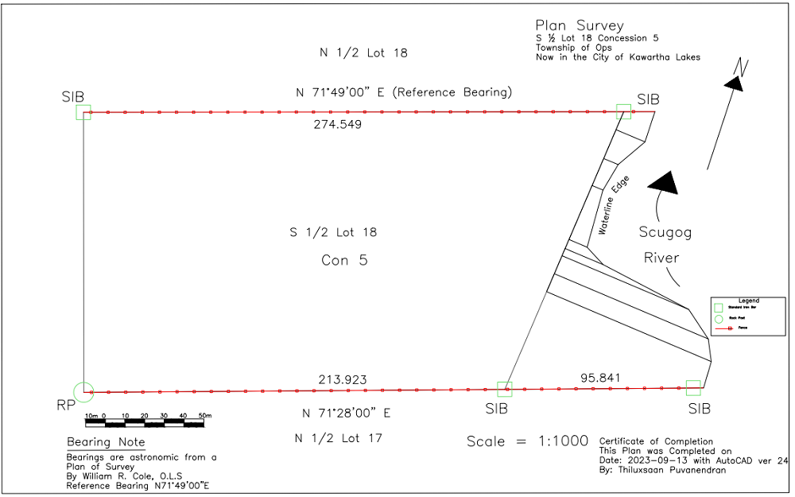
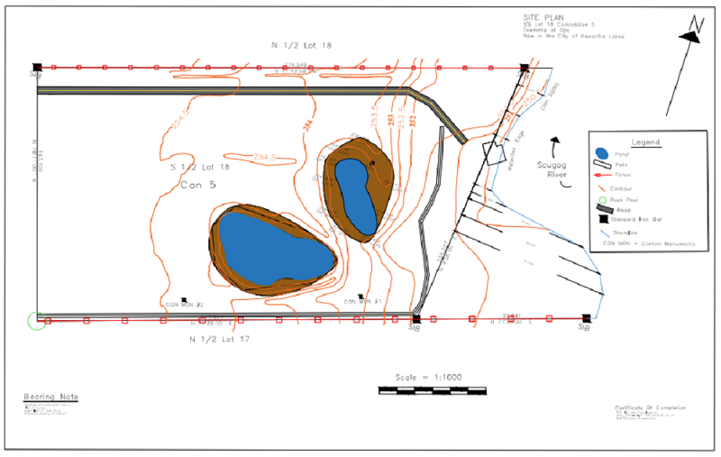
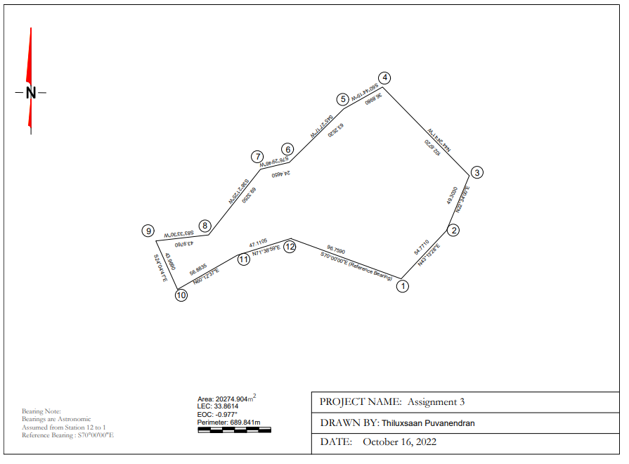

GIS AutoCAD
Overview
The purpose of this course is to teach student the tools such as the line tool, circle tool, rotate, copy, erase, trim etc., they are using in AutoCAD and how the tools work. How to integrate spatial data into AutoCAD drawings and making sure all measurements are precise. Build an understanding on how to place field data onto existing AutoCAD drawings.
Intended Learning Outcomes
- Understanding the basics and history of surveying.
- Gain an understanding of and calculating azimuth and bearing.
- How to read survey drawings and produce them.
- Understanding that errors can always show up in field measurements and how to counter them.
- Minimizing errors using GNSS/GPS.
- Apply AutoCAD skills to produce maps based on understanding how AutoCAD work on survey plans and to acquire basic AutoCAD skills.
- Relating survey documentation, bearings, and notes of a plan of survey to produce a digital and paper map.
- To understand field notes collected by data loggers and total stations.
- Producing a site plan with topographic features using contours on AutoCAD.
- Understanding how one can make a foresight and backsight measurement when completing a traverse survey and how to calculate average foresight and backsight.
- Also calculating bearings from surveyed distance.
- Using Coordinate Geometry (COGO) method to develop a map through survey distances angles calculated.
Sequence of Class activities:
Assignment 1: Become familiar with AutoCAD commands to draw lines and text. Produce a digital map based on relating survey documentation, bearings and plan of survey that is up to industry standards.
Assignment 2: To produce an AutoCAD drawing that shows topographic features and contours. Also gain an understanding on field notes by data loggers and from a total station.
Assignment 3: To create a site map from previous GIS survey camp field data using AutoCAD. Also using COGO to produce digital map.
These assignments help us understand the basics of using AutoCAD and using multiple tools that are essential in the workplace environment. This course helps us understand how to read the surveyor’s notes and implement them into AutoCAD in order to replicate the environment that is surveyed.